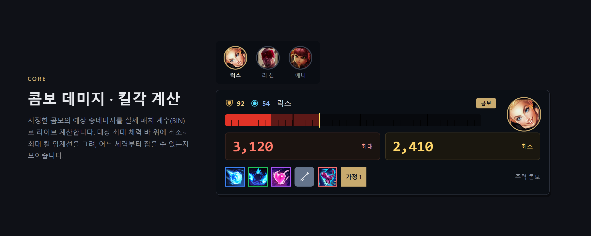
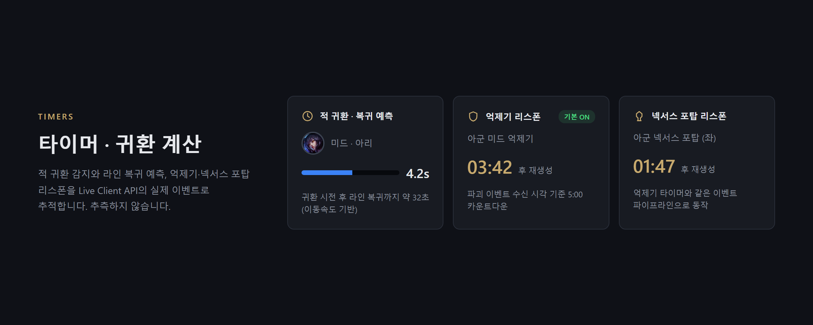
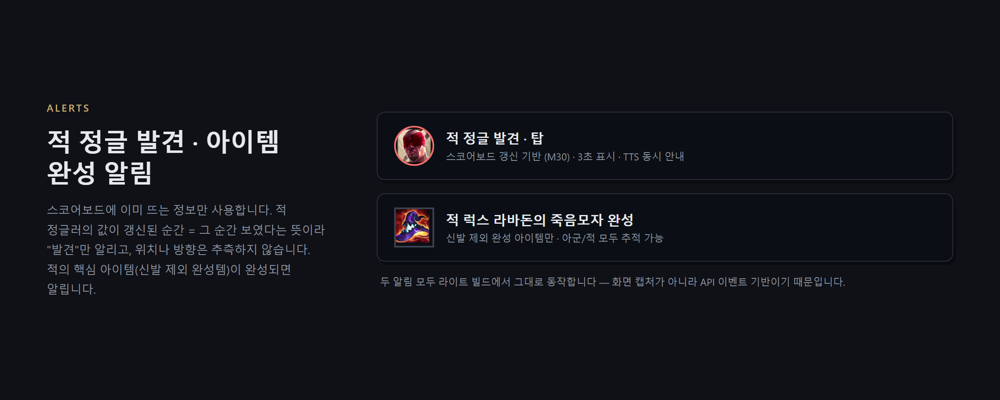
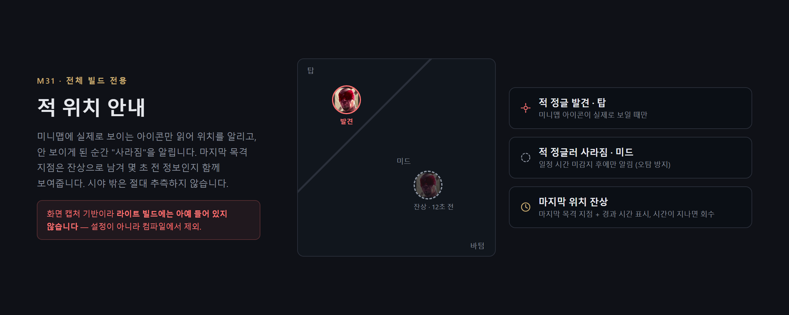
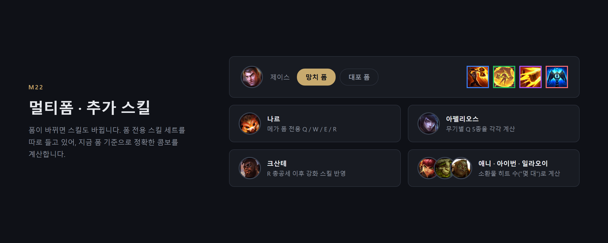
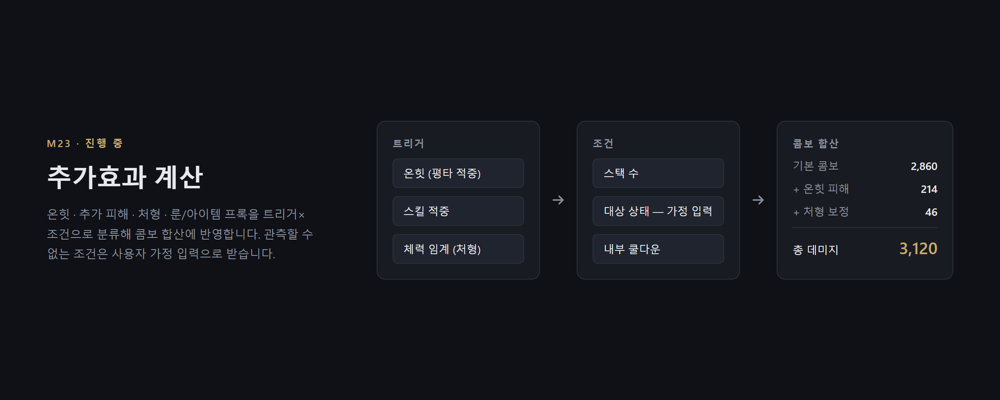
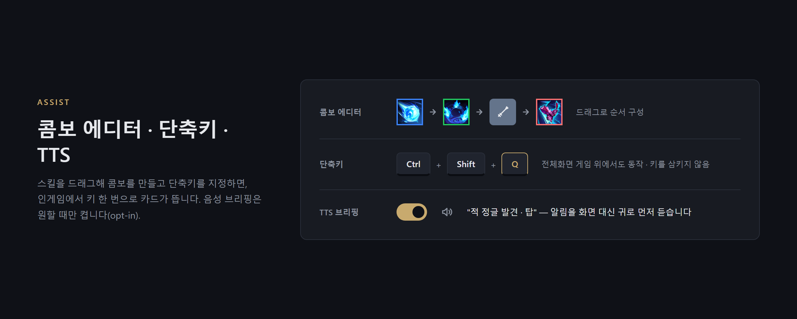

FOVA
지금 이 콤보로 킬각이 나오는지, 게임 화면 위에서 바로.
내 실시간 스탯·룬·아이템 기준으로 콤보 데미지를 계산해 보여주는 가벼운 LoL 오버레이 — 무료
무설치 ZIP(4.0MB)도 있습니다 · Windows 10/11







안전한 이유
헬퍼류와 원리부터 다릅니다 — 소스 코드가 공개돼 있어 직접 확인할 수 있습니다.
- 공개 정보만 사용 — Riot이 공식 제공하는 로컬 Live Client API와 공개 게임 데이터(Data Dragon)만 읽습니다.
- 게임 메모리 접근 없음 — 메모리 읽기/쓰기, 코드 주입, 패킷 분석을 하지 않습니다.
- 조작 대신 표시만 — 매크로·자동 입력이 없고, 오버레이는 정보를 보여줄 뿐 절대 대신 플레이하지 않습니다.
- 인게임 광고 없음 — 광고는 데스크톱 홈 화면에만, 게임이 시작되면 완전히 꺼집니다.
- 가볍게 — 저사양 PC 기준으로 설계. 게임 프레임에 영향을 주지 않는 것이 성능 원칙입니다.
Riot Developer Portal에 제품 등록·심사 절차를 진행 중입니다. 전체 소스:
github.com/JiMin7788/lol_overlay_fova
다운로드
fova-0.3.2-setup.exe (4.5MB) — 설치 후 시작 메뉴에서 실행
fova-0.3.2.zip (4.0MB) — 풀어서 Fova.exe 실행 (무설치)
.NET 8 Desktop Runtime이 필요합니다 — 설치 파일이 없으면 자동으로 안내합니다.
무결성 확인용 SHA-256 해시 제공.
Windows SmartScreen이 "인식할 수 없는 앱"이라고 표시할 수 있습니다 — 다운로드 이력이 적은
모든 무서명 프로그램에 뜨는 일반 경고입니다. "추가 정보 → 실행"으로 진행하거나, 위 해시로 파일을 검증하세요.